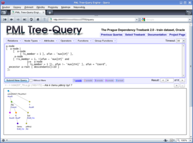

This distribution contains an SQL-database-driven implementation of a PML-TQ system for querying linguistically annotated treebanks.
{kind=link}

Note:
If you only want to search over a small amount of PML files on your computer, you can use a Perl-driven client-side PML-TQ search engine, that is part of the pmltq extension to TrEd (see section about client interfaces below). The client-side engine is slower than the SQL based version available on this page, but does not require any installation, configuration, or data conversion.
We are also hosting a PML-TQ server with several treebanks including PDT 2.0, Penn Treebank 3, Tiger Corpus, and several dependency treebanks from the CoNLL 2009 Shared Task (for CoNLL 2009 ST participants only). Our PML-TQ server can be accessed using a web interface or TrEd (see the section Client below).
Querying using our server requires registration, which you can obtain free of charge by sending me an e-mail. Note: for some treebanks, you will need to have a license from the treebank distributor.
PML-TQ query engine has a client server architecture (HTTP client + tiny HTTP server + CGI + SQL database backend) and provides graphical, command-line, and simple web-based interfaces.
Client
Any web browser with good support for SVG rendering, CSS, and JavaScript can be used as a client to a PML-TQ server (we recomend Opera).
A fully graphical client interface for PML-TQ supporting both PML-TQ servers and local searching is part of the tree editor TrEd (a GPL-licensed software available separatelly) as an extension called pmltq. To install this extension, start TrEd, select Session -> Manage Extensions -> Get New Extensions, and select 'pmltq'. When done, press Shift+F3 to start the search. Select 'Treebank (server)' for searching using a PML-TQ server over a full treebank, or 'Files (local)' for Perl-driven client-side search over some local files.
A simple text-based client is included in the package below.
Server
You only need to install the server if you want to use PML-TQ for fast querying over a mid-to-large-sized treebank of your own. For individual files or small treebanks, up to say 10K trees (your mileage may vary), the Perl-based query engine built into the TrEd and the command-line client should be sufficient. You can also register for querying treebanks hosted on our PML-TQ servers - see above).
Running a PML-TQ server requires either Oracle or PostgresSQL database, Perl >= 5.8.8 (plus several Perl modules installable from CPAN), and a treebank encoded in (or convertible to) the PML format.
The server has been tested on Linux with Oracle XE 10g and PostgresSQL (8.4beta).
Version
Current version is 0.7.5 (alpha)
This realease is ready for testing, but some important parts of the documentation are still missing.
Download
pmltq.tar.gz - PML-TQ distribution package
Documentation
- PML-TQ Manual and Query Language Reference (incomplete)
License
This software is published under GPL (General Public License).
Directory structure
Subdirectories:
config - sample configuration files (must edit first!)
contrib - sample conversion scripts (e.g. for PDT 2.0)
doc - documentation
libs - perl modules used by pmltq
resources - PML schemas used by pmltq
sql - SQL scripts to init the database
run - unified server startup/shutdown script and configuration
Scripts:
install_deps.sh - install modules required by the search server
pmltq_http - small HTTP server providing PML-TQ services
pml2base.pl - PML to SQL database conversion script
pmltq - command-line client for both dabase and Perl-driven query engine
Installation of PML-TQ Server
To run PML-TQ Servers, you will first need to install an SQL database server (supported are Oracle XE and PostgreSQL, but complete aggregation functionality is only supported for Oracle XE and PostgreSQL >= 8.4.1).
Then follow carefully the instructions in the README file provided in the distribution and the configuration scripts you will be asked to edit during the installation process.
Copyright
Copyright (c) 2008-2009 by Petr Pajas and Jan Štěpánek
Acknowledgement
The development of PML-TQ is a part of the project "Integration of language resources for information extraction from natural texts", Information Society of Grant Agency of Academy of Sciences of the Czech Republic: 1ET101120503